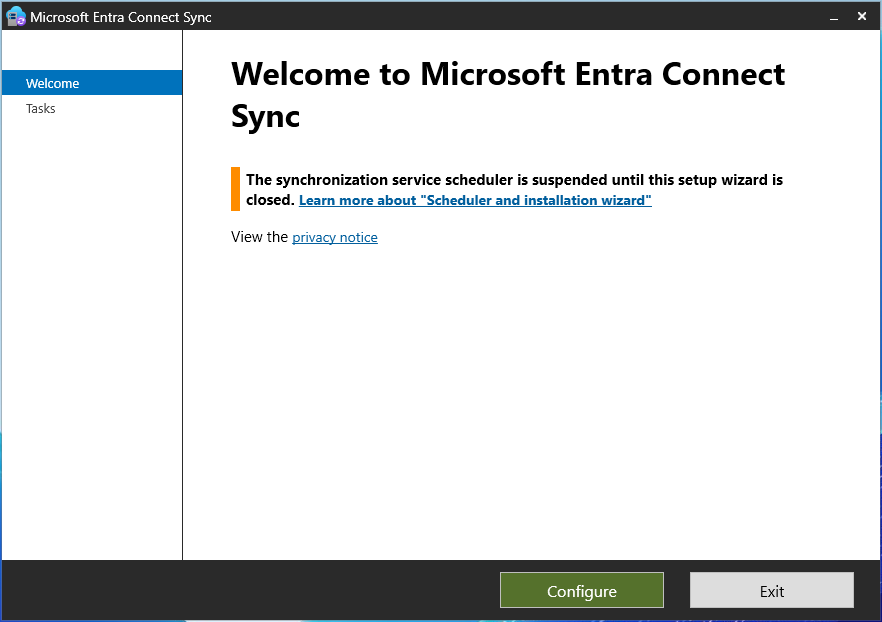
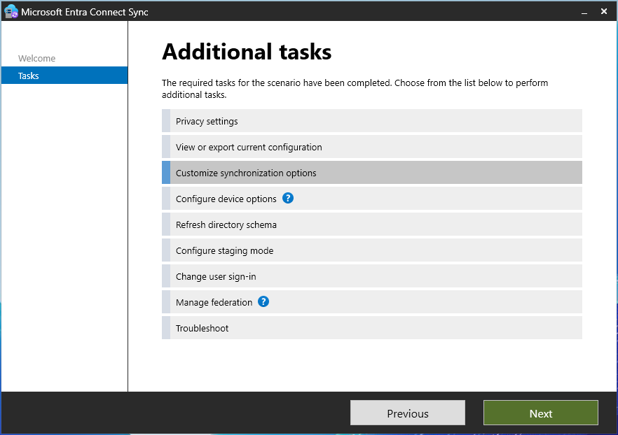
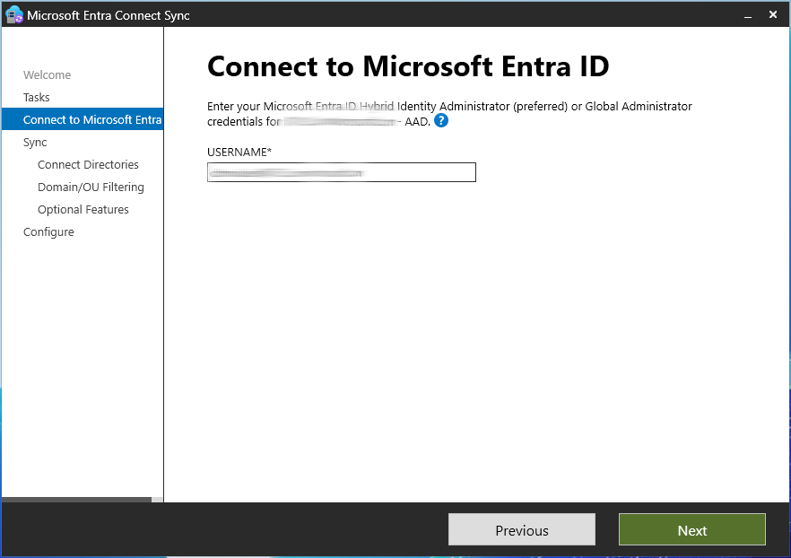
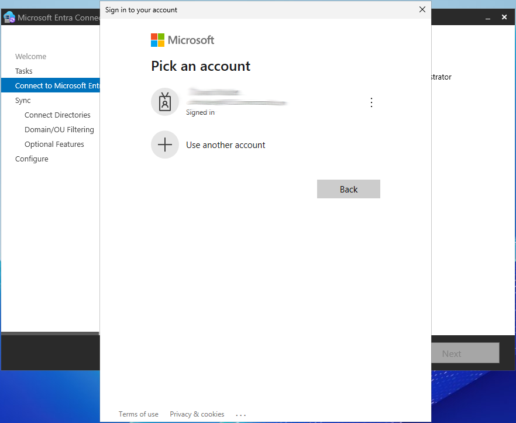
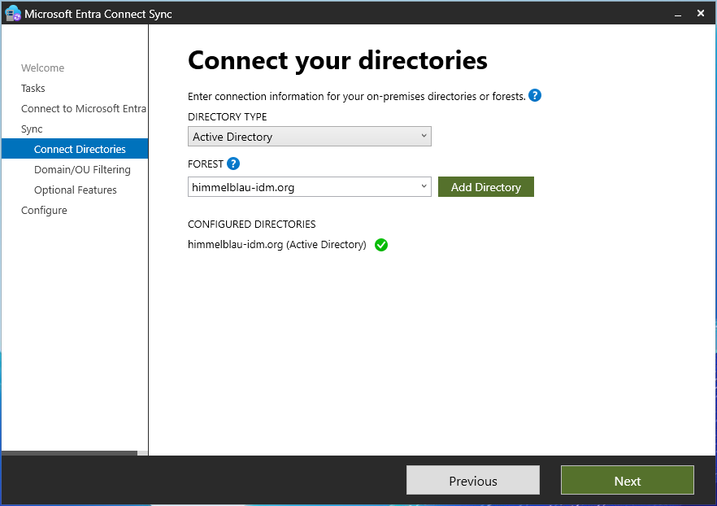
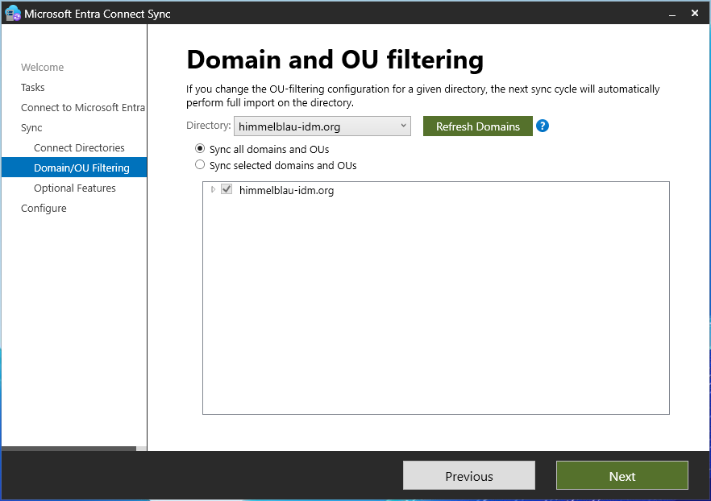
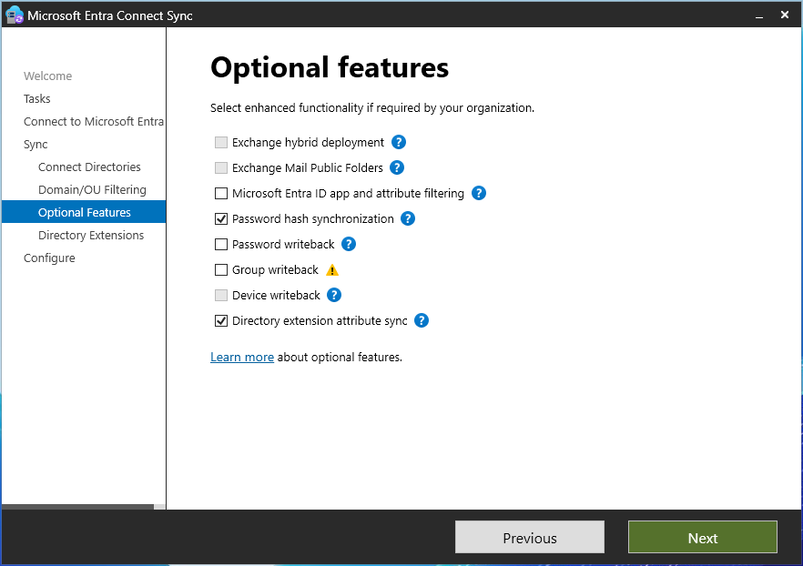
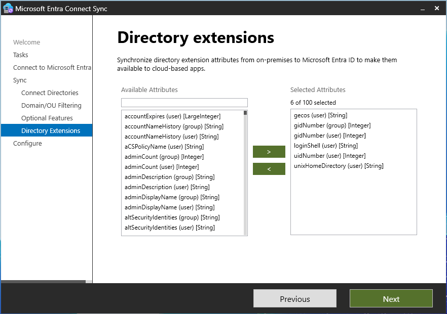
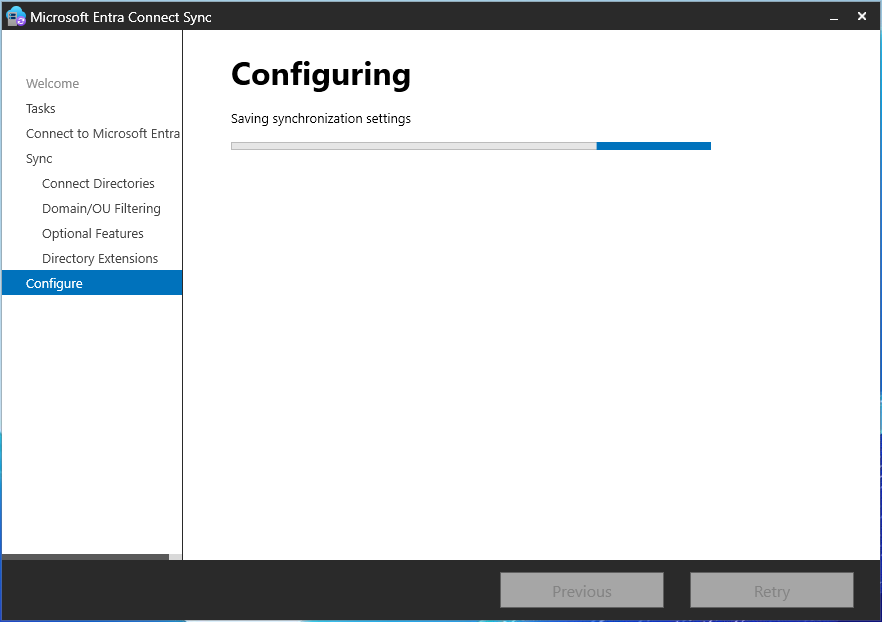
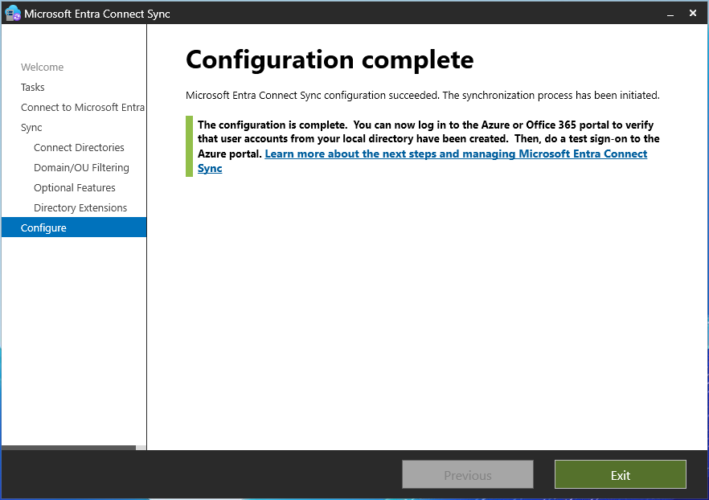

Overview
This guide explains how to configure Microsoft Entra Connect Sync to synchronize Unix attributes (uidNumber, gidNumber, loginShell, unixHomeDirectory, etc.) from an on-premises Active Directory to an existing Azure Entra ID instance. This is essential for Linux authentication solutions like Himmelblau that rely on Unix attributes stored in AD.
This guide assumes that Microsoft Entra Connect is already installed and configured. If not, follow the instructions in this wiki to configure Microsoft Entra Connect.
Prerequisites
- A Windows Server with Active Directory Domain Services (AD DS) installed and configured.
- A configured Active Directory domain with Unix attributes (
uidNumber,gidNumber,unixHomeDirectory,loginShell, etc.) assigned to users and groups. - An Azure Entra ID tenant.
- Microsoft Entra Connect Sync installed on a domain-joined Windows Server.
Step-by-Step Configuration
1. Open Microsoft Entra Connect Sync
- Launch Microsoft Entra Connect Sync from the Start Menu.
- Click "Configure" to begin.

2. Customize Synchronization Options
- Select "Customize synchronization options" and click Next.

3. Connect to Microsoft Entra ID
- Enter your Azure Entra ID administrator credentials (Global Admin or Hybrid Identity Admin).

- Sign in when prompted.

4. Connect to Active Directory
- Verify that the on-premises Active Directory domain (forest) is connected.
- Click Next.

5. Configure Domain and OU Filtering
- Choose whether to sync all domains and OUs or only specific OUs.
- Click Next.

6. Enable Directory Extension Attribute Sync
- Ensure "Directory extension attribute sync" is checked.
- Click Next.

7. Select Unix Attributes for Synchronization
- In the Directory Extensions step, select the following attributes:
uidNumber(user)gidNumber(user) (the user's primary group attribute)gidNumber(group)loginShell(user)unixHomeDirectory(user)gecos(user) (optional, for additional Unix user details)- Click Next.

8. Configure and Apply Settings
- Click Next to save and apply the synchronization settings.
- Wait for the configuration to complete.

9. Verify Configuration Completion
- Once the setup is completed, you’ll see a confirmation message.
- Click Exit.

10. Validate Synchronization
After the setup:
- Open the Microsoft Entra Admin Center.
- Go to Hybrid Management → Microsoft Entra Connect.
- Check the sync status and ensure that users have their Unix attributes synchronized.